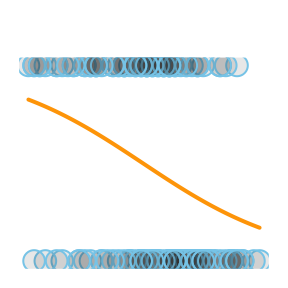
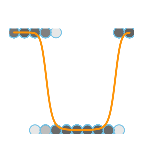
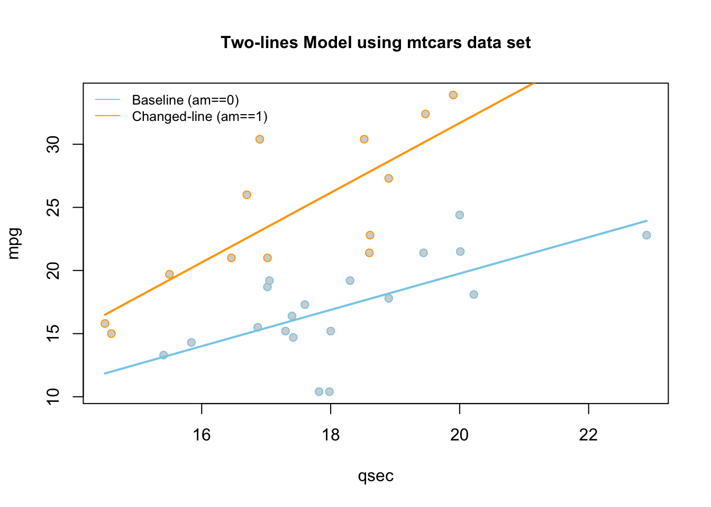

Logistic Regression
Regression for a qualitative binary response variable \((Y_i = 0\) or \(1)\). The explanatory variables can be either quantitative or qualitative.
Simple Logistic Regression Model

Regression for a qualitative binary response variable \((Y_i = 0\) or \(1)\) using a single (typically quantitative) explanatory variable.
Overview
The probability that \(Y_i = 1\) given the observed value of \(x_i\) is called \(\pi_i\) and is modeled by the equation
The coefficents \(\beta_0\) and \(\beta_1\) are difficult to interpret directly. Typicall \(e^{\beta_0}\) and \(e^{\beta_1}\) are interpreted instead. The value of \(e^{\beta_0}\) or \(e^{\beta_1}\) denotes the relative change in the odds that \(Y_i=1\). The odds that \(Y_i=1\) are \(\frac{\pi_i}{1-\pi_i}\).
Examples: challenger | mouse
R Instructions
Console Help Command: ?glm()
Diagnose the Goodness-of-Fit
There are two ways to check the goodness of fit of a logistic regression model.
Option 1: Hosmer-Lemeshow Goodness-of-Fit Test (Most Common)
To check the goodness of fit of a logistic regression model where there are few or no replicated \(x\)-values use the Hosmer-Lemeshow Test.
library(ResourceSelection) This loads the ResourceSelection R package so that
you can access the hoslem.test() function. You may need to run the code:
install.packages(“ResourceSelection”) first.
hoslem.test( This R
function performs the Hosmer-Lemeshow Goodness of Fit Test. See the
“Explanation” file to learn about this test. YourGlmName YourGlmName is the name of your glm(…)
code that you created previously.
$y, ALWAYS type a “y” here. This gives you
the actual binary (0,1) y-values of your logistic regression. The
goodness of fit test will compare these actual values to your predicted
probabilities for each value in order to see if the model is a “good
fit.” YourGlmName YourGlmName is the name you used to
save the results of your glm(…) code. $fitted, ALWAYS type
“fitted” here. This gives you the fitted probabilities \(\pi_i\) of your logistic regression.
g=10) The
“g=10” is the default option for the value of g. The g is the number of
groups to run the goodness of fit test on. Just leave it at 10 unless
you are told to do otherwise. Ask your teacher for more information if
you are interested.
Option 2: Deviance Goodness-of-fit Test (Less Common)
In some cases, there are many replicated \(x\)-values for all x-values, i.e., each value of x is repeated more than 50 times. Though this is rare, it is good to use the deviance goodness-of-fit test whenever this happens.
pchisq( The
pchisq command allows you to compute p-values from the
chi-squared distribution. residual
deviance, The residual deviance is shown at
the bottom of the output of your summary(YourGlmName) and
should be typed in here as a number like 25.3. df for residual deviance, The df for the residual deviance is also shown at
the bottom of the output of your
summary(YourGlmName).
lower.tail=FALSE) This command ensures you
find the probability of the chi-squared distribution being as extreme or
more extreme than the observed value of residual deviance.
Plot the Regression


Explanation
Simple Logistic Regression is used when
- the response variable is binary \((Y_i=0\) or \(1)\), and
- there is a single explanatory variable \(X\) that is typically quantitative but could be qualitative (if \(X\) is binary or ordinal).
The Model
Since \(Y_i\) is binary (can only be 0 or 1) the model focuses on describing the probability that \(Y_i=1\) for a given scenario. The probability that \(Y_i = 1\) given the observed value of \(x_i\) is called \(\pi_i\) and is modeled by the equation
\[ P(Y_i = 1|\, x_i) = \frac{e^{\beta_0 + \beta_1 x_i}}{1+e^{\beta_0 + \beta_1 x_i}} = \pi_i \]
The assumption is that for certain values of \(X\) the probability that \(Y_i=1\) is higher than for other values of \(X\).
Interpretation
This model for \(\pi_i\) comes from modeling the log of the odds that \(Y_i=1\) using a linear regression, i.e., \[ \log\underbrace{\left(\frac{\pi_i}{1-\pi_i}\right)}_{\text{Odds for}\ Y_i=1} = \underbrace{\beta_0 + \beta_1 x_i}_{\text{linear regression}} \] Beginning to solve this equation for \(\pi_i\) leads to the intermediate, but important result that \[ \underbrace{\frac{\pi_i}{1-\pi_i}}_{\text{Odds for}\ Y_i=1} = e^{\overbrace{\beta_0 + \beta_1 x_i}^{\text{linear regression}}} = e^{\beta_0}e^{\beta_1 x_i} \] Thus, while the coefficients \(\beta_0\) and \(\beta_1\) are difficult to interpret directly, \(e^{\beta_0}\) and \(e^{\beta_1}\) have a valuable interpretation. The value of \(e^{\beta_0}\) is interpreted as the odds for \(Y_i=1\) when \(x_i = 0\). It may not be possible for a given model to have \(x_i=0\), in which case \(e^{\beta_0}\) has no interpretation. The value of \(e^{\beta_1}\) denotes the proportional change in the odds that \(Y_i=1\) for every one unit increase in \(x_i\).
Notice that solving the last equation for \(\pi_i\) results in the logistic regression model presented at the beginning of this page.
Hypothesis Testing
Similar to linear regression, the hypothesis that \[ H_0: \beta_1 = 0 \\ H_a: \beta_1 \neq 0 \] can be tested with a logistic regression. If \(\beta_1 = 0\), then there is no relationship between \(x_i\) and the log of the odds that \(Y_i = 1\). In other words, \(x_i\) is not useful in predicting the probability that \(Y_i = 1\). If \(\beta_1 \neq 0\), then there is information in \(x_i\) that can be utilized to predict the probability that \(Y_i = 1\), i.e., the logistic regression is meaningful.
Checking Model Assumptions
The model assumptions are not as clear in logistic regression as they are in linear regression. For our purposes we will focus only on considering the goodness of fit of the logistic regression model. If the model appears to fit the data well, then it will be assumed to be appropriate.
Deviance Goodness of Fit Test
If there are replicated values of each \(x_i\), then the deviance goodness of fit test tests the hypotheses \[ H_0: \pi_i = \frac{e^{\beta_0 + \beta_1 x_i}}{1+e^{\beta_0 + \beta_1 x_i}} \] \[ H_a: \pi_i \neq \frac{e^{\beta_0 + \beta_1 x_i}}{1+e^{\beta_0 + \beta_1 x_i}} \]
Hosmer-Lemeshow Goodness of Fit Test
If there are very few or no replicated values of each \(x_i\), then the Hosmer-Lemeshow goodness of fit test can be used to test these same hypotheses. In each case, the null assumes that logistic regression is a good fit for the data while the alternative is that logistic regression is not a good fit.
Prediction
One of the great uses of Logistic Regression is that it provides an estimate of the probability that \(Y_i=1\) for a given value of \(x_i\). This probability is often referred to as the risk that \(Y_i=1\) for a certain individual. For example, if \(Y_i=1\) implies a person has a disease, then \(\pi_i=P(Y_i=1)\) represents the risk of individual \(i\) having the disease based on their value of \(x_i\), perhaps a measure of their cholesterol or some other predictor of the disease.
Multiple Logistic Regression Model

Logistic regression for multiple explanatory variables that can either be quantitative or qualitative or a mixture of the two.
Overview
Select a model to see interpretation details, an example, and R Code help.
|
 |
\[ P(Y_i = 1|\, x_i) = \frac{e^{\beta_0 + \beta_1 x_i}}{1+e^{\beta_0 + \beta_1 x_i}} = \pi_i \] |
The Simple Logistic Regression model uses a single x-variable once: \(X_i\).
| Parameter | Effect |
|---|---|
| \(\beta_0\) | Y-intercept of the Model. Only interpreted by computing \(e^{\beta_0}\), which gives the “baseline odds” of the model. Technically only meaningful for when \(x_i=0\) is a reasonable value. |
| \(\beta_1\) | Slope term of the model. Interpreted by computing \(e^{\beta_1}\), which gives the multiplicative change in the odds for each 1 unit increase in x. Say, \(e^{\beta_1} = 1.2\), then the odds are 1.2 times what they were before whenever x is increased by 1 unit. That’s a twenty percent increase in odds. |
|
 |
\[ P(Y_i = 1| X_i) = \frac{e^{\beta_0 + \beta_1 X_i + \beta_2 X_i^2}}{1 + e^{\beta_0 + \beta_1 X_{i } + \beta_2 X_{i}^2}} \] |
The Quadratic Logistic Regression model uses the same \(X\)-variable twice, once with a \(\beta_1 X_i\) slope term and once with a \(\beta_2 X_i^2\) quadratic term.
| Parameter | Effect |
|---|---|
| \(\beta_0\) | Y-intercept of the Model. Interpreted by computing \(e^{\beta_0}\), which gives the baseline odds of a success. Only interpreteable when \(X_i=0\) is meaningful. |
| \(\beta_1\) | Controls the x-position of the center point of the “vertex” of the quadratic logistic model by \(\frac{-\beta_1}{2\cdot\beta_2}\). Not directly interpretable, even with \(e^{\beta_1}\), as the effect of \(\beta_1\) is not independent of \(\beta_2\). |
| \(\beta_2\) | Controls the concavity and “steepness” of the Model: negative values result in a logistic model with a maximum point on the curve, positive values result in a minimum point on the curve; large values imply “steeper” curves and low values imply “flatter” curves. Also involved in the position of the vertex, see \(\beta_1\)’s explanation. Not directly interpretable. |
An Example
Using the airquality data set, we run the following
“quadratic” logistic regression. Pay careful attention to how the
mathematical model for \(P(Y_i=1 | X_i) =
\ldots\) is translated to R-Code inside of glm(...)
by using the log(Odds) model instead of the \(P(Y_i = 1 | X_i)\) model.
\[
\underbrace{\log\left(\overbrace{\frac{\pi_i}{1-\pi_i}}^{\text{Odds}\
Y_i = 1}\right)}_\text{Temp>80} \underbrace{=}_{\sim}
\overbrace{\beta_0}^{\text{y-int}} +
\overbrace{\beta_1}^{\stackrel{\text{slope}}{\text{term}}}
\underbrace{X_{i}}_\text{Month} \underbrace{+}_{+}
\overbrace{\beta_2}^{\stackrel{\text{quadratic}}{\text{term}}} \underbrace{X_{i}^2}_\text{I(Month^2)}
\] Then, by using the statement in
glm(..., family=binomial) the model that is put into the
glm is translated back to the logistic model for you. Note that whether
we look at the log(Odds) model or the \(P(Y_i=1)\) model, the values of each \(\beta\) are the same.
glm.quad <- A
name we made up for our “quadratic” logistic regression.
glm( R
function glm used to perform generalized linear regressions, among which
the logistic regression model is a specific example. But glm can do much
more. Temp > 75 Y-variable, should be 0’s and 1’s. In this case the
Temp > 75 statement is translated into TRUE (1) and
FALSE (0) values. It may be preferred to use a
mutate(y = ifelse(Temp > 75, 1, 0)) statement prior to
running the glm to create a column of 0’s and 1’s. ~ The tilde
~ is what glm(…) uses to state the regression equation
\(Y_i = ...\) for the log of the odds
linear equation. Notice that the ~ is not followed by \(\beta_0 + \beta_1\) like \(Y_i = ...\). Instead, \(X_{i}\) (Month in this case) is the first
term following ~. This is because the \(\beta\)’s are going to be estimated by the
glm(…). These “Estimates” can be found using summary(glmObject) and
looking at the Estimates column in the output.
Month \(X_{i}\), should be quantitative.
+ The plus
+ is used between each term in the model. Note that only
the x-variables are included in the glm(…) from the \(\text{log of the odds} = ...\) model. No
beta’s are included. I(Month^2)
\(X_{i}^2\),
where the function I(…) protects the squaring of Month from how glm(…)
would otherwise interpret that statement. The I(…) function must be used
anytime you raise an x-variable to a power in the glm(…)
statement. , data=airquality This is the data set we are using for the
regression. , family=binomial
This declares that a logistic regression will
be performed instead of a linear regression. )
Closing parenthsis for the glm(…)
function.
Press Enter to run the code.
… Click to View Output.
glm.quad <- glm(Temp > 75 ~ Month + I(Month^2), data=airquality, family=binomial)
emphasize.strong.cols(1)
pander(summary(glm.quad)$coefficients, )| Estimate | Std. Error | z value | Pr(>|z|) | |
|---|---|---|---|---|
| (Intercept) | -47.99 | 7.733 | -6.206 | 5.442e-10 |
| Month | 13.87 | 2.23 | 6.22 | 4.978e-10 |
| I(Month^2) | -0.9452 | 0.1543 | -6.124 | 9.13e-10 |
The estimates shown in the summary output table above approximate the \(\beta\)’s in the log of the odds logistic regression model:
- \(\beta_0\) is estimated by the (Intercept) value of -47.99,
- \(\beta_1\) is estimated by the
Monthvalue of 13.87, and - \(\beta_2\) is estimated by the
I(Month^2)value of -0.9452.
Because the estimate of the \(\beta_2\) term is negative (-0.9452), this parabola will “open down” (concave). This tells us that probabilitiy of the high temperature exceeding 75 degrees F will increase to a point, then decrease again. The vertex of this parabola will be at \(-b_1/(2b_2) = -(13.87)/(2\cdot (-0.9452)) = 7.337072\) months, which tells us that the highest average temperature will occur around mid July (7.34 months to be exact). The y-intercept is -47.99, which would be an odds of nearly zero, \(e^{-47.99}\approx 1.44e-21\), that the temperature would exceed 75 degrees F if it were possible for the month to be “month zero.” Since this is not possible, the y-intercept is not meaningful for this model.
Note that interpreting either \(\beta_1\) or \(\beta_2\) by themselves is quite difficult because they both work with together with \(X_{i}\).
\[ \log\left(\overbrace{\frac{\pi_i}{1-\pi_i}}^\text{odds of Temp >75}\right) \approx \overbrace{-47.99}^\text{y-int} + \overbrace{13.87}^{\stackrel{\text{slope}}{\text{term}}} X_{i} + \overbrace{-0.9452}^{\stackrel{\text{quadratic}}{\text{term}}} X_{i}^2 \]
The regression function is drawn as follows. Be sure to look at the “Code” to understand how this graph was created using the ideas in the equation above.
|
Using Base R
|
Using ggplot2
|


|
|
\[ Y_i = \overbrace{\underbrace{\beta_0 + \beta_1 X_{1i} + \beta_2 X_{2i} + \beta_3 X_{1i} X_{2i}}_{E\{Y_i\}}}^\text{Two-lines Model} + \epsilon_i \] \[ X_{2i} = \left\{\begin{array}{ll} 1, & \text{Group B} \\ 0, & \text{Group A} \end{array}\right. \] |

The so called “two-lines” model uses a quantitative \(X_{1i}\) variable and a 0,1 indicator variable \(X_{2i}\). It is a basic example of how a “dummy variable” or “indicator variable” can be used to turn qualitative variables into quantitative terms. In this case, the indicator variable \(X_{2i}\), which is either 0 or 1, produces two separate lines: one line for Group A, and one line for Group B.
| Parameter | Effect |
|---|---|
| \(\beta_0\) | Y-intercept of the Model. |
| \(\beta_1\) | Controls the slope of the “base-line” of the model, the “Group 0” line. |
| \(\beta_2\) | Controls the change in y-intercept for the second line in the model as compared to the y-intercept of the “base-line” line. |
| \(\beta_3\) | Called the “interaction” term. Controls the change in the slope for the second line in the model as compared to the slope of the “base-line” line. |
An Example
Using the mtcars data set, we run the following
“two-lines” regression. Note that am has only 0 or 1
values: View(mtcars).
\[ \underbrace{Y_i}_\text{mpg} \underbrace{=}_{\sim} \overbrace{\beta_0}^{\stackrel{\text{y-int}}{\text{baseline}}} + \overbrace{\beta_1}^{\stackrel{\text{slope}}{\text{baseline}}} \underbrace{X_{1i}}_\text{qsec} + \overbrace{\beta_2}^{\stackrel{\text{change in}}{\text{y-int}}} \underbrace{X_{2i}}_\text{am} + \overbrace{\beta_3}^{\stackrel{\text{change in}}{\text{slope}}} \underbrace{X_{1i}X_{2i}}_\text{qsec:am} + \epsilon_i \]
lm.2lines <- A
name we made up for our “two-lines” regression. lm( R function lm used to
perform linear regressions in R. The lm stands for “linear
model”. mpg Y-variable, should be quantitative.
~ The tilde
~ is what lm(…) uses to state the regression equation \(Y_i = ...\). Notice that the ~
is not followed by \(\beta_0 +
\beta_1\) like \(Y_i = ...\).
Instead, \(X_{1i}\) is the first term
following ~. This is because \(\beta\)’s are going to be estimated by the
lm(…). These estimates can be found using summary(lmObject).
qsec \(X_{1i}\), should be quantitative.
+ The plus
+ is used between each term in the model. Note that only
the x-variables are included in the lm(…) from the \(Y_i = ...\) model. No beta’s are
included. am \(X_{2i}\), an
indicator or 0,1 variable. This term allows the y-intercept of the two
lines to differ. + The plus + is used between each term
in the model. Note that only the x-variables are included in the lm(…)
from the \(Y_i = ...\) model. No beta’s
are included. qsec:am \(X_{1i}X_{2i}\)
the interaction term. This allows the slopes of the two lines to
differ. , data=mtcars This is the data set we are using for the
regression. )
Closing parenthsis for the lm(…)
function.
Press Enter to run the code.
… Click to View Output.
lm.2lines <- lm(mpg ~ qsec + am + qsec:am, data=mtcars)
pander(summary(lm.2lines)$coefficients)| Estimate | Std. Error | t value | Pr(>|t|) | |
|---|---|---|---|---|
| (Intercept) | -9.01 | 8.218 | -1.096 | 0.2823 |
| qsec | 1.439 | 0.45 | 3.197 | 0.003432 |
| am | -14.51 | 12.48 | -1.163 | 0.2548 |
| qsec:am | 1.321 | 0.7017 | 1.883 | 0.07012 |
The estimates shown above approximate the \(\beta\)’s in the regression model: \(\beta_0\) is estimated by the (Intercept),
\(\beta_1\) is estimated by the
qsec value of 1.439, \(\beta_2\) is estimated by the
am value of -14.51, and \(\beta_3\) is estimated by the
qsec:am value of 1.321.
This gives two separate equations of lines.
Automatic Transmission (am==0, \(X_{2i} = 0\)) Line
\[ \hat{Y}_i = \overbrace{-9.01}^{\stackrel{\text{y-int}}{\text{baseline}}} + \overbrace{1.439}^{\stackrel{\text{slope}}{\text{baseline}}} X_{1i} \]
Manual Transmission (am==1 , \(X_{2i} = 1\)) Line
\[ \hat{Y}_i = \underbrace{(\overbrace{-9.01}^{\stackrel{\text{y-int}}{\text{baseline}}} + \overbrace{-14.51}^{\stackrel{\text{change in}}{\text{y-int}}})}_{\stackrel{\text{y-intercept}}{-23.52}} + \underbrace{(\overbrace{1.439}^{\stackrel{\text{slope}}{\text{baseline}}} +\overbrace{1.321}^{\stackrel{\text{change in}}{\text{slope}}})}_{\stackrel{\text{slope}}{2.76}} X_{1i} \]
These lines are drawn as follows. Be sure to look at the “Code” to understand how this graph was created using the ideas in the two equations above.
|
Using Base R  |
Using ggplot2
|

|
|
\[ Y_i = \overbrace{\underbrace{\beta_0 + \beta_1 X_{1i} + \beta_2 X_{2i} + \beta_3 X_{1i}X_{2i}}_{E\{Y_i\}}}^\text{3D Model} + \epsilon_i \] |

The so called “3D” regression model uses two different quantitative x-variables, an \(X_{1i}\) and an \(X_{2i}\). Unlike the two-lines model where \(X_{2i}\) could only be a 0 or a 1, this \(X_{2i}\) variable is quantitative, and can take on any quantitative value.
| Parameter | Effect |
|---|---|
| \(\beta_0\) | Y-intercept of the Model |
| \(\beta_1\) | Slope of the line in the \(X_1\) direction. |
| \(\beta_2\) | Slope of the line in the \(X_2\) direction. |
| \(\beta_3\) | Interaction term that allows the model, which is a plane in three-dimensional space, to “bend”. If this term is zero, then the regression surface is just a flat plane. |
An Example
Here is what a 3D regression looks like when there is no interaction
term. The two x-variables of Month and Temp
are being used to predict the y-variable of Ozone.
\[ \underbrace{Y_i}_\text{Ozone} \underbrace{=}_{\sim} \overbrace{\beta_0}^{\stackrel{\text{y-int}}{\text{baseline}}} + \overbrace{\beta_1}^{\stackrel{\text{slope}}{\text{baseline}}} \underbrace{X_{1i}}_\text{Temp} + \overbrace{\beta_2}^{\stackrel{\text{change in}}{\text{y-int}}} \underbrace{X_{2i}}_\text{Month} + \epsilon_i \]
air_lm <- lm(Ozone ~ Temp + Month, data= airquality)
pander(air_lm$coefficients)| (Intercept) | Temp | Month |
|---|---|---|
| -139.6 | 2.659 | -3.522 |
Notice how the slope, \(\beta_1\), in the “Temp” direction is estimated to be 2.659 and the slope in the “Month” direction, \(\beta_2\), is estimated to be -3.522. Also, the y-intercept, \(\beta_0\), is estimated to be -139.6.
## Hint: library(car) has a scatterplot 3d function which is simple to use
# but the code should only be run in your console, not knit.
## library(car)
## scatter3d(Y ~ X1 + X2, data=yourdata)
## To embed the 3d-scatterplot inside of your html document is harder.
#library(plotly)
#library(reshape2)
#Perform the multiple regression
air_lm <- lm(Ozone ~ Temp + Month, data= airquality)
#Graph Resolution (more important for more complex shapes)
graph_reso <- 0.5
#Setup Axis
axis_x <- seq(min(airquality$Temp), max(airquality$Temp), by = graph_reso)
axis_y <- seq(min(airquality$Month), max(airquality$Month), by = graph_reso)
#Sample points
air_surface <- expand.grid(Temp = axis_x, Month = axis_y, KEEP.OUT.ATTRS=F)
air_surface$Z <- predict.lm(air_lm, newdata = air_surface)
air_surface <- acast(air_surface, Month ~ Temp, value.var = "Z") #y ~ x
#Create scatterplot
plot_ly(airquality,
x = ~Temp,
y = ~Month,
z = ~Ozone,
text = rownames(airquality),
type = "scatter3d",
mode = "markers") %>%
add_trace(z = air_surface,
x = axis_x,
y = axis_y,
type = "surface")Here is a second view of this same regression with what is called a contour plot, contour map, or density plot.
mycolorpalette <- colorRampPalette(c("skyblue2", "orange"))
filled.contour(x=axis_x, y=axis_y, z=matrix(air_surface$Z, length(axis_x), length(axis_y)), col=mycolorpalette(26))Including the Interaction Term
Here is what a 3D regression looks like when the interaction term is
present. The two x-variables of Month and Temp
are being used to predict the y-variable of Ozone.
\[ \underbrace{Y_i}_\text{Ozone} \underbrace{=}_{\sim} \overbrace{\beta_0}^{\stackrel{\text{y-int}}{\text{baseline}}} + \overbrace{\beta_1}^{\stackrel{\text{slope}}{\text{baseline}}} \underbrace{X_{1i}}_\text{Temp} + \overbrace{\beta_2}^{\stackrel{\text{change in}}{\text{y-int}}} \underbrace{X_{2i}}_\text{Month} + \overbrace{\beta_3}^{\stackrel{\text{change in}}{\text{slope}}} \underbrace{X_{1i}X_{2i}}_\text{Temp:Month} + \epsilon_i \]
air_lm <- lm(Ozone ~ Temp + Month + Temp:Month, data= airquality)
pander(air_lm$coefficients)| (Intercept) | Temp | Month | Temp:Month |
|---|---|---|---|
| -3.915 | 0.77 | -23.01 | 0.2678 |
Notice how all coefficient estimates have changed. The y-intercept, \(\beta_0\) is now estimated to be \(-3.915\). The slope term, \(\beta_1\), in the Temp-direction is estimated as \(0.77\), while the slope term, \(\beta_2\), in the Month-direction is estimated to be \(-23.01\). This change in estimated coefficiets is due to the presence of the interaction term’s coefficient, \(\beta_3\), which is estimated to be \(0.2678\). As you should notice in the graphic, the interaction model allows the “slopes” in each direction to change, creating a “curved” surface for the regression surface instead of a flat surface.
#Perform the multiple regression
air_lm <- lm(Ozone ~ Temp + Month + Temp:Month, data= airquality)
#Graph Resolution (more important for more complex shapes)
graph_reso <- 0.5
#Setup Axis
axis_x <- seq(min(airquality$Temp), max(airquality$Temp), by = graph_reso)
axis_y <- seq(min(airquality$Month), max(airquality$Month), by = graph_reso)
#Sample points
air_surface <- expand.grid(Temp = axis_x, Month = axis_y, KEEP.OUT.ATTRS=F)
air_surface <- air_surface %>% mutate(Z=predict.lm(air_lm, newdata = air_surface))
air_surface <- acast(air_surface, Month ~ Temp, value.var = "Z") #y ~ x
#Create scatterplot
plot_ly(airquality,
x = ~Temp,
y = ~Month,
z = ~Ozone,
text = rownames(airquality),
type = "scatter3d",
mode = "markers") %>%
add_trace(z = air_surface,
x = axis_x,
y = axis_y,
type = "surface")And here is that same plot as a contour plot.
air_surface <- expand.grid(Temp = axis_x, Month = axis_y, KEEP.OUT.ATTRS=F)
air_surface$Z <- predict.lm(air_lm, newdata = air_surface)
mycolorpalette <- colorRampPalette(c("skyblue2", "orange"))
filled.contour(x=axis_x, y=axis_y, z=matrix(air_surface$Z, length(axis_x), length(axis_y)), col=mycolorpalette(27))
The coefficient \(\beta_j\) is interpreted as the change in the expected value of \(Y\) for a unit increase in \(X_{j}\), holding all other variables constant, for \(j=1,\ldots,p-1\). However, this interpretation breaks down when higher order terms (like \(X^2\)) or interaction terms (like \(X1:X2\)) are included in the model.
See the Explanation tab for details about possible hypotheses here.
The probability that \(Y_i = 1\) given the observed data \((x_{i1},\ldots,x_{ip})\) is called \(\pi_i\) and is modeled by the equation
\[ P(Y_i = 1|\, x_{i1},\ldots,x_{ip}) = \frac{e^{\beta_0 + \beta_1 x_{i1} + \ldots + \beta_p x_{ip}}}{1+e^{\beta_0 + \beta_1 x_{i1} + \ldots + \beta_p x_{ip} }} = \pi_i \]
The coefficents \(\beta_0,\beta_1,\ldots,\beta_p\) are difficult to interpret directly. Typically \(e^{\beta_k}\) for \(k=0,1,\ldots,p\) is interpreted instead. The value of \(e^{\beta_k}\) denotes the relative change in the odds that \(Y_i=1\). The odds that \(Y_i=1\) are \(\frac{\pi_i}{1-\pi_i}\).
Examples: GSS
R Instructions
Console Help Command: ?glm()
Diagnose the Goodness-of-Fit
There are two ways to check the goodness of fit of a logistic regression model.
Option 1: Hosmer-Lemeshow Goodness-of-Fit Test
To check the goodness of fit of a logistic regression model where there are few or no replicated \(x\)-values use the Hosmer-Lemeshow Test.
library(ResourceSelection) This loads the ResourceSelection R package so that
you can access the hoslem.test() function. You may need to run the code:
install.packages(“ResourceSelection”) first.
hoslem.test( This R
function performs the Hosmer-Lemeshow Goodness of Fit Test. See the
“Explanation” file to learn about this test. YourGlmName YourGlmName is the name of your glm(…)
code that you created previously.
$y, ALWAYS type a “y” here. This gives you
the actual binary (0,1) y-values of your logistic regression. The
goodness of fit test will compare these actual values to your predicted
probabilities for each value in order to see if the model is a “good
fit.” YourGlmName YourGlmName is the name you used to
save the results of your glm(…) code. $fitted, ALWAYS type
“fitted” here. This gives you the fitted probabilities \(\pi_i\) of your logistic regression.
g=10) The
“g=10” is the default option for the value of g. The g is the number of
groups to run the goodness of fit test on. Just leave it at 10 unless
you are told to do otherwise. Ask your teacher for more information if
you are interested.
Option 2: Deviance Goodness-of-fit Test
In some cases, there are many replicated \(x\)-values for all x-values. Though this is rare, it is good to use the deviance goodness-of-fit test whenever this happens.
pchisq( The
pchisq command allows you to compute p-values from the
chi-squared distribution. residual
deviance, The residual deviance is shown at
the bottom of the output of your summary(YourGlmName) and
should be typed in here as a number like 25.3. df for residual deviance, The df for the residual deviance is also shown at
the bottom of the output of your
summary(YourGlmName).
lower.tail=FALSE) This command ensures you
find the probability of the chi-squared distribution being as extreme or
more extreme than the observed value of residual deviance.
The null hypothesis of the goodness-of-fit test is that the logistic regression is a good fit of the data. So a large p-value (like 0.479) is good because it allows us to trust the results of our logistic regression. When the p-value becomes very small, we must “reject the null” and conclude a poor fit, which implies that we should not trust the results of the logistic regression.
Predict Probabilities
To predict the probability that \(Y_i=1\) for a given \(x\)-value, use the code
predict( The
predict() function allows us to use the regression model that was
obtained from glm() to predict the probability that \(Y_i = 1\) for a given \(X_i\). YourGlmName, YourGlmName is the name of the object
you created when you performed your logistic regression using
glm(). newdata = The newdata = command allows you to
specify the x-values for which you want to obtain predicted
probabilities that \(Y_i=1\).
NewDataFrame, Typically, NewDataFrame is created in real time
using the data.frame( X1 = c(Value 1, Value 2, …), X2 = c(Value 1, Value
2, …), …) command. You should see the GSS example file for an example of
how to use this function. type =
“response”) The type = “response” options
specifies that you want predicted probabilities. There are other options
available. See ?predict.glm for details.
Plot the Regression
Explanation
Multiple Logistic Regression is used when
- the response variable is binary \((Y_i=0\) or \(1)\), and
- there are multiple explanatory variables \(X_1,\ldots,X_p\) that can be either quantitative or qualitative.
The Model
Very little changes in multiple logistic regression from Simple Logistic Regression. The probability that \(Y_i = 1\) given the observed data \((x_{i1},\ldots,x_{ip})\) is called \(\pi_i\) and is modeled by the expanded equation
\[ P(Y_i = 1|\, x_{i1},\ldots,x_{ip}) = \frac{e^{\beta_0 + \beta_1 x_{i1} + \ldots + \beta_p x_{ip}}}{1+e^{\beta_0 + \beta_1 x_{i1} + \ldots + \beta_p x_{ip} }} = \pi_i \]
The assumption is that for certain combinations of \(X_1,\ldots,X_p\) the probability that \(Y_i=1\) is higher than for other combinations.
Interpretation
The model for \(\pi_i\) comes from modeling the log of the odds that \(Y_i=1\) using a linear regression, i.e., \[ \log\underbrace{\left(\frac{\pi_i}{1-\pi_i}\right)}_{\text{Odds for}\ Y_i=1} = \underbrace{\beta_0 + \beta_1 x_{i1} + \ldots + \beta_p x_{ip}}_{\text{linear regression}} \] Beginning to solve this equation for \(\pi_i\) leads to the intermediate, but important result that \[ \underbrace{\frac{\pi_i}{1-\pi_i}}_{\text{Odds for}\ Y_i=1} = e^{\overbrace{\beta_0 + \beta_1 x_{i1} + \ldots + \beta_p x_{ip}}^{\text{liear regression}}} = e^{\beta_0}e^{\beta_1 x_{i1}}\cdots e^{\beta_p x_{ip}} \] As in Simple Linear Regression, the values of \(e^{\beta_0}\), \(e^{\beta_1}\), \(\ldots\), \(e^{\beta_p}\) are interpreted as the proportional change in odds for \(Y_i=1\) when a given \(x\)-variable experiences a unit change, all other variables being held constant.
Checking the Model Assumptions
Diagnostics are the same in multiple logistic regression as they are in simple logistic regression.
Prediction
The idea behind prediction in multiple logistic regression is the same as in simple logistic regression. The only difference is that more than one explanatory variable is used to make the prediction of the risk that \(Y_i=1\).